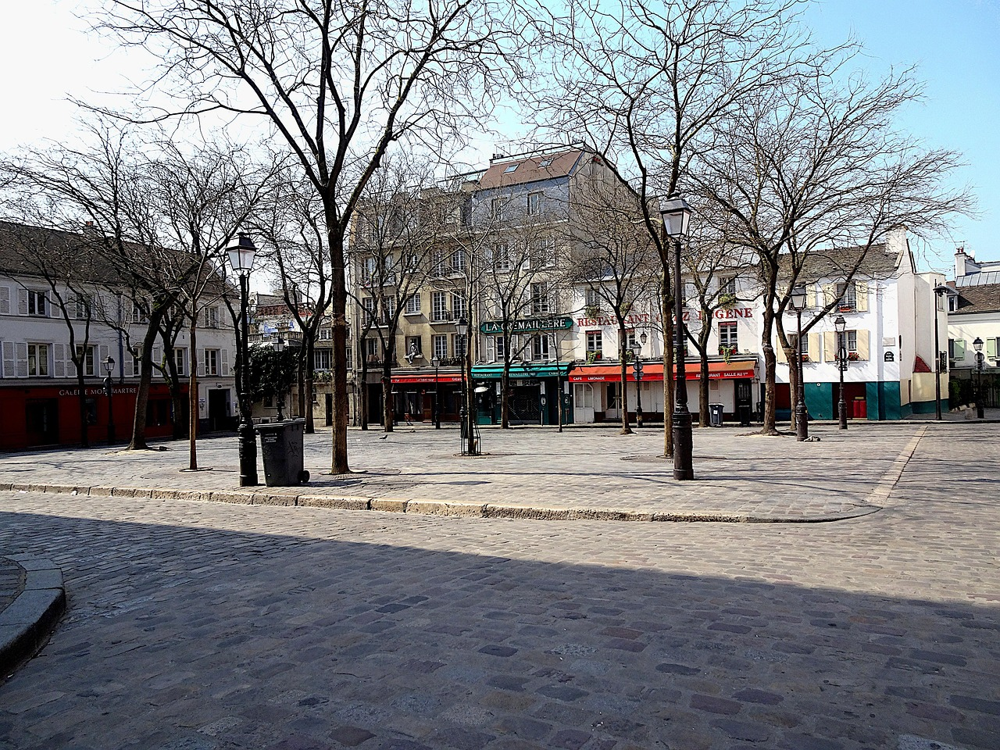
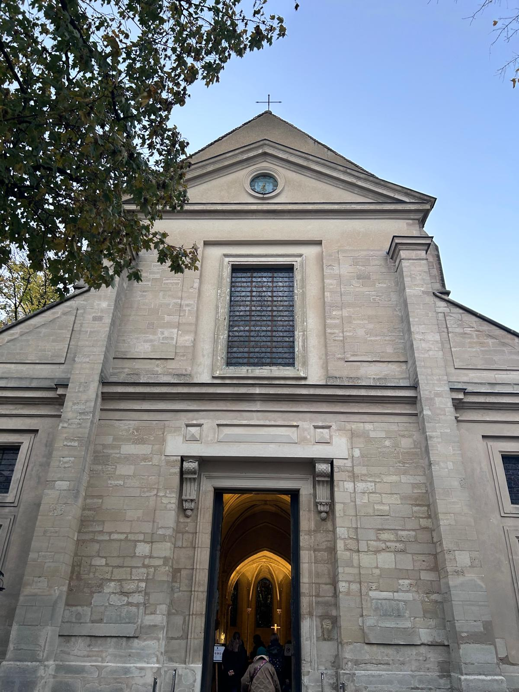

Place du Tertre
Piazza dei ritrattisti e dei caffè: dal cuore bohémien di ieri alla vitalità artistica di oggi.
Sosta 15′ — Tema: osservazione urbana
Passeggiata tra storia, arte e panorami: dal Muro dei Ti Amo alle cupole del Sacro Cuore, passando per atelier e piazze simbolo del quartiere.

Piazza dei ritrattisti e dei caffè: dal cuore bohémien di ieri alla vitalità artistica di oggi.
Sosta 15′ — Tema: osservazione urbana

Fondata nel 1147: architettura romanica e gotica primitiva, tra le chiese più antiche di Parigi.
Sosta 10′ — Tema: patrimonio

1875–1914, stile romano-bizantino: pietra “candida”, grande mosaico absidale e panorama sulla città.
Sosta 20′ — Tema: architettura & panorama